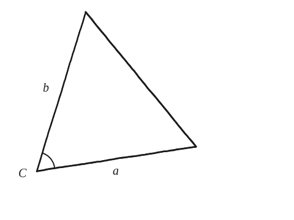
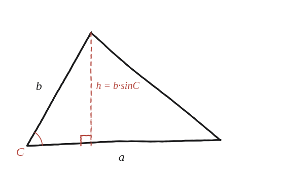

Demostra que, si un triangle té els costats a i b que es troben formant un angle C, la seva àrea és (1/2)ab sin C.

Una fórmula ja coneguda, escrita diferent
L'àrea d'un triangle és (1/2)×base×altura: això ja se sap. El repte aquí no és trobar una fórmula nova, és escriure l'altura en funció de coses que sí es donen —un costat i un angle—, quan l'altura en si no és cap de les dades directes del problema.
El triangle rectangle amagat dins de l'altura
Deixant caure la perpendicular des d'un vèrtex fins a la recta que conté el costat oposat, aquesta perpendicular (l'altura) és un catet d'un triangle rectangle petit, amb un dels costats donats (b) fent d'hipotenusa d'aquest triangle petit, i l'angle C entremig.

Escriure l'altura amb el sinus
En aquest triangle rectangle petit, sinC = altura/b (l'altura és el costat oposat a C, b és la hipotenusa). Per tant, h = b·sinC.
Substituir a la fórmula de l'àrea
Amb base=a i altura=b·sinC: Àrea = (1/2)×a×(b·sinC) = (1/2)ab·sinC.
Per què també val amb C obtús
Aquesta fórmula no necessita que el triangle sigui rectangle, ni que se'n sàpiga l'altura per endavant: funciona amb qualsevol triangle del qual es coneguin dos costats i l'angle que formen, fins i tot quan C és obtús. En aquest cas, el peu de l'altura cau fora del triangle (exactament com a la Qüestió 79), no dins —però la mateixa expressió h=b·sinC continua sent certa perquè es defineix sin(C) per a un angle obtús com sin(180°−C), precisament perquè fórmules com aquesta no s'hagin de partir en dos casos separats.
Àrea = (1/2)ab·sinC. Surt d'escriure l'altura del triangle com h=b·sinC (del triangle rectangle que forma amb el costat b i l'angle C), i substituir-la a la fórmula habitual (1/2)×base×altura. La fórmula val igual amb C agut o obtús, connectant directament amb la generalització de Pitàgores de la Qüestió 79.
Comprovació
a=6, b=7, C=30°: Àrea=(1/2)×6×7×sin(30°)=21×0,5=10,5. Comprovat també amb C=90°, 120° i 150° per coordenades directes: la fórmula coincideix exactament en tots quatre casos, agut o obtús.